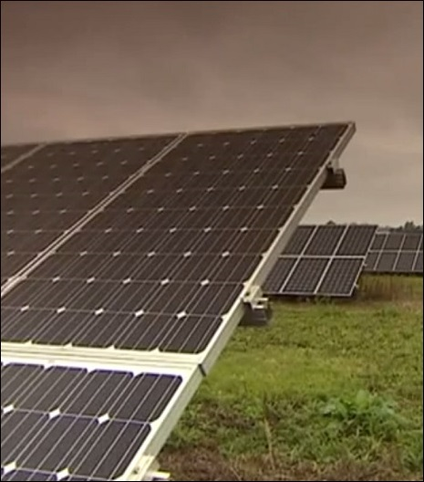

PERMIAS-MA Lecture/Seminar Series, Archive Page
Current seminar schedule is on the main page
"Solar Cells: Inner Workings and Economic Feasibility" [Facebook Event Page]
| Speaker | : | Jonathan P. Mailoa |
| Doctoral Candidate, Massachusetts Institute of Technology | ||
| Date/Time | : | Saturday, 5 December 2015 / 1:00pm |
| Location | : | Massachusetts Institute of Technology, Room 3-333 |
|
 For more information & direction, see the MIT campus map See also this related newspaper op-ed (in the Jakarta Post) |
|
"Why Study Nanotechnology?" [Facebook Event Page]
| Speaker | : | Dr. Poetro L. Sambegoro |
| MIT Department of Mechanical Engineering | ||
| Nanoengineering Group | ||
| Date/Time | : | Saturday, 14 November 2015 / 1:00pm |
| Location | : | Massachusetts Institute of Technology, Room 3-333 |
|
For more information & direction, see the MIT campus map |
|
"Health Decision Science: an overview and potential application in Indonesia"
[Facebook Event Page]
| Speaker | : | Christian Suharlim |
| Research Associate, Harvard School of Public Health | ||
| Date/Time | : | Saturday, 24 October 2015 / 1:00pm |
| Location | : | Massachusetts Institute of Technology, Room 3-333 |
|
For more information & direction, see the MIT campus map |
|
"Analisis Kenaikan Harga BBM dan Suku Bunga Acuan BI dll:
Pendekatan Makroekonomika Baru"
| Speaker | : | Prof. Insukindro |
| Fakultas Ekonomika dan Bisnis, Univ. Gadjah Mada | ||
| Date/Time | : | Thursday, 16 July 2015 / 6:00pm |
| Location | : | Massachusetts Institute of Technology, Room 3-333 |
|
For more information & direction, see the MIT campus map |
|
"Political Economy of Indonesia's Climate Change Policies:
Understanding when a policy reform works"
| Speaker | : | Budy Resosudarmo |
| Indonesia Research Fellow, Harvard Kennedy School | ||
| Indonesia Project, Australian National University | ||
| Date/Time | : | Saturday, 2 May 2015 / 1:00pm |
| Location | : | Massachusetts Institute of Technology, Room 3-333 |
|
For more information & direction, see the MIT campus map |
|
"Improving Anti-Poverty Programs Using Scientific Evidence:
Results from a series of field experiments in Indonesia"
| Speaker | : | Prof. Benjamin Olken |
| MIT Department of Economics | ||
| The Abdul Latif Jameel Poverty Action Lab | ||
| Date/Time | : | Saturday, 7 March 2015 / 1:00pm |
| Location | : | Massachusetts Institute of Technology, Room 3-133 |

For more information & direction, see the MIT campus map |
|
"A Discussion on Energy Policy in Indonesia" [Facebook Event Page]
| Speaker | : | Dr. Herman Agustiawan |
| Member of Dewan Energi Nasional (2009 - 2014) | ||
| Date/Time | : | Sunday, 8 February 2015 / 1:00pm |
| Location | : | Massachusetts Institute of Technology, Room 3-333 |
|
For more information & direction, see the MIT campus map As an additional background material, please see also the following document (a pdf copy of Peraturan Pemerintah tahun 2014 tentang Kebijakan Energi Nasional) |
|
"Technological Innovations in Healthcare" [Facebook Event Page]
| Speaker | : | Dr. Soleh Udin Al Ayubi |
| Boston Children's Hospital - Harvard Medical School | ||
| Date/Time | : | Saturday, 15 November 2014 / 1:00pm |
| Location | : | Massachusetts Institute of Technology, Room 3-370 |

For more information & direction, see the MIT campus map |
|
"A Panel Discussion on Entrepreneurship in Indonesia" [Facebook Event Page]
| Speakers | : | Azalea Ayuningtyas, Co-founder of Du'Anyam |
| Adamas Belva Syah Devara, Co-founder of Ruangguru |
||
| Horlix Leo, Founder of Cold Press Indonesia |
||
| Date/Time | : | Sunday, 9 November 2014 / 11:00am |
| Location | : | Massachusetts Institute of Technology, Room 3-333 |
|
For more information & direction, see the MIT campus map Visit also the respective homepage of Du'Anyam, Ruangguru, and Cold Press Indonesia |
|
"Eastern Indonesian Climate Change over Geologic Timescale"
| Speaker | : | Satrio A. Wicaksono |
| Doctoral Candidate, Brown University | ||
| Date/Time | : | Saturday, 18 October 2014 / 1:00pm |
| Location | : | Massachusetts Institute of Technology, Room 3-333 |
|
For more information & direction, see the MIT campus map |
|
"Monetary Policy in Indonesia: How Theory Differs from Practice"
| Speaker | : | Dr. Gunawan Wicaksono |
| Indonesia Research Fellow, Harvard Kennedy School | ||
| Senior Economist, Bank Indonesia | ||
| Date/Time | : | Saturday, 5 April 2014 / 1:00pm |
| Location | : | Massachusetts Institute of Technology, Room 34-304 |
|
For more information & direction, see the MIT campus map |
|
"99% Imagination, 1% Reality: The Stories behind Buildings"
| Speaker | : | Erioseto Hendranata |
| M.Arch Program, MIT Architecture & Planning | ||
| Date/Time | : | Saturday, 8 March 2014 / 1:00pm |
| Location | : | Massachusetts Institute of Technology, Room 56-114 |
|
For more information & direction, see the MIT campus map |
|
"The Rise and Fall of Infectious Diseases"
| Speaker | : | Panji F. Hadisoemarto |
| Doctoral Candidate, Harvard School of Public Health | ||
| Date/Time | : | Saturday, 8 February 2014 / 1:00pm |
| Location | : | Massachusetts Institute of Technology, Room 3-333 |
|
For more information & direction, see the MIT campus map |
|
"Why has Corruption Persisted in the Reform Era?
An Assessment of Anti-Corruption Efforts in Indonesia"
| Speaker | : | Todung Mulya Lubis |
| Indonesia Research Fellow, Harvard Kennedy School | ||
| Date/Time | : | Saturday, 7 December 2013 / 1:00pm |
| Location | : | Massachusetts Institute of Technology, Room 4-237 |
For more information & direction, see the MIT campus map
See also this related newspaper op-ed (in the Jakarta Post)
and this article (in the TEMPO magazine) by T. Mulya Lubis
"Financial Institutions and Our Modern Economy"
| Speaker | : | Pramoda Dei Sudarmo |
| MPA Candidate, Harvard Kennedy School of Government | ||
| Date/Time | : | Saturday, 9 November 2013 / 12:30pm |
| Location | : | Massachusetts Institute of Technology, Room 5-234 |
For more information & direction, see the MIT campus map
"Building Urban Resilience: Case of Annual Flooding in Jakarta"
| Speaker | : | Dr. Deden Rukmana |
| Associate Professor of Urban Studies & Planning, Savannah State University |
||
| Date/Time | : | Tuesday, 22 October 2013 / 12:00pm (noon) |
| Location | : | Harvard Kennedy School, Room B-500 (Belfer Building) |
For more information & direction, see the HKS campus map
Also visit the following blog maintained by Deden Rukmana
"Asteroid Impact Avoidance: Armageddon and Beyond?"
| Speaker | : | SungWook Paek |
| PhD Candidate, MIT Aeronautics & Astronautics | ||
| Date/Time | : | Saturday, 28 September 2013 / 1:00pm |
| Location | : | Massachusetts Institute of Technology, Room 4-231 |
For more information & direction, see the MIT campus map
See also this related article from the MIT News Office